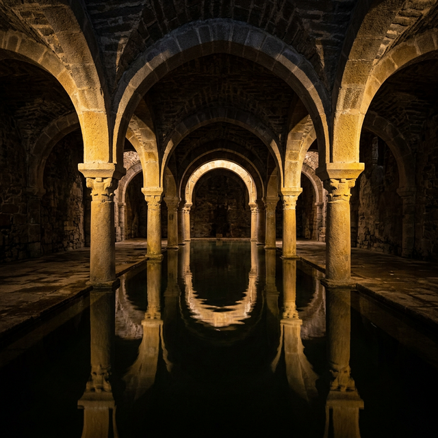

Museos y Arte
La oferta cultural cacereña viaja desde la prehistoria hasta el arte más vanguardista.

Museo de Cáceres (Palacio de las Veletas)
Imprescindible. Su mayor tesoro se encuentra en el subsuelo: un aljibe hispano-árabe del siglo XI-XII, uno de los mejor conservados del mundo, que sigue recogiendo el agua de lluvia.

Museo de Arte Contemporáneo Helga de Alvear
Una de las colecciones privadas de arte contemporáneo más importantes de Europa, albergada en un edificio de arquitectura moderna galardonado internacionalmente que contrasta maravillosamente con el entorno histórico.

Fundación Mercedes Calles y Carlos Ballestero (MCCB)
Ubicada en la Plaza de San Jorge, acoge exposiciones temporales de primer nivel internacional (Goya, Picasso, Warhol) en el interior de un palacio rehabilitado.